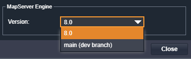

MapServer 8.0.1 Release#
MapServer 8.0.1 was released on April 21st 2023. 8.0.1 is a maintenance release which means it is fully compatible with MapServer 8.0.0 and focuses on fixes and improvements, without any breaking changes. The full release notes are here.
Lots of the changes in the release notes are marked as backports. These are fixes are added to the development branch and if they are not new features, and don’t change existing functionality, are “backported” into the active release branch.
The MapServer Security Policy contains a good summary of what release numbers mean. Versions are in the format x.y.z, so 8.0.1 is a “point release” in the list of definitions below:
x - Major release series number.
Major releases indicate substantial changes to the software and backwards
compatibility is not guaranteed across series. Current release series is 8
y - Minor release series number.
Minor releases indicate smaller, functional additions or improvements to
the software and should be generally backwards compatible within a major release series.
Users should be able to confidently upgrade from one minor release to another within
the same release series, so from 7.4.x to 7.6.x.
z - Point release series number.
Point releases indicate maintenance releases - usually a combination of
bug and security fixes and perhaps small feature additions.
Backwards compatibility should be preserved and users should be able to
confidently upgrade between point releases
within the same release series, so from 7.6.4 to 7.6.5.
Enhancements#
CGI Parameters#
Since the 8.0 release there have been a few posts on the user mailing lists about not being able to dynamically
change various Mapfile parameters in MapServer 8.0. The 8.0.1 release aims to resolve the most common of these,
and pull request #6804 allows
runtime substitution to be used for the web TEMPLATE property.
Features without a Geometry#
Pull request #6731 allows features without a geometry (NULL shapes) to be returned in WFS GetFeature requests. This is useful if you have a list of features with attributes and want to return records with null geometries in the same list.
The PROJ Environment Variable#
Pull request #6863 allows multiple paths to be set for the PROJ_LIB environment variable.
For example the following can now be set in a CONFIG file:
CONFIG
ENV
PROJ_LIB "C:/MapServer/bin/proj9/share;C:\Temp"
...
This allows a common system-wide location for a proj.db and other projection files, and then another location to store
custom projections for specific setups.
Note also that MapServer, as with GDAL, supports the newer PROJ_DATA variable name. This new name was added in PROJ 9.1 to avoid confusion that the path in the variable should point to the PROJ binaries rather than resource files.
In a Linux machine paths should be separated by : for example:
CONFIG
ENV
PROJ_DATA "/usr/local/share/proj:/var/myprojections"
...
Security#
There are a couple of security improvements included in the MapServer 8.0.1.
Restricted Version Information#
Pull request #6808 removes the MapServer version and supported types from web responses. Previously the following information would have been visible to all users:
<!-- MapServer version 8.0.0 OUTPUT=PNG OUTPUT=JPEG OUTPUT=KML SUPPORTS=PROJ
SUPPORTS=AGG SUPPORTS=FREETYPE SUPPORTS=CAIRO SUPPORTS=SVG_SYMBOLS SUPPORTS=RSVG
SUPPORTS=ICONV SUPPORTS=FRIBIDI SUPPORTS=WMS_SERVER SUPPORTS=WMS_CLIENT SUPPORTS=WFS_SERVER
SUPPORTS=WFS_CLIENT SUPPORTS=WCS_SERVER SUPPORTS=SOS_SERVER SUPPORTS=OGCAPI_SERVER SUPPORTS=FASTCGI
SUPPORTS=GEOS SUPPORTS=PBF INPUT=JPEG INPUT=POSTGIS INPUT=OGR INPUT=GDAL INPUT=SHAPEFILE INPUT=FLATGEOBUF
-->
This information is still displayed when running from the command line (e.g. when using map2img, mapserver -v), but
hiding this when accessed via the web avoids leaking these details.
The MS_NO_VERSION environment variable can be removed from Mapfiles and CONFIG files if using 8.0.1 or higher as it no longer
has any effect.
The command line details however have been improved as part of pull request #6794
This adds PROJ and GDAL versions to MapServer version output, so the following is now displayed when running mapserver -v.
These details can now be more easily added to any issues created on GitHub to help resolving bugs that relate to these dependencies.
Password Redaction#
Pull request #6616 redacts passwords used for database connections from error and log messages. Redactions were already in place, but missed some connection string formats. This code now covers all types of database connection strings.
Memory Leak Fixes#
OSS-Fuzz is an open source project launched by Google in 2016 that aims to improve the security and stability of software by providing continuous fuzz testing to open source software projects. Fuzz testing is a technique where software is bombarded with a large number of inputs to identify vulnerabilities and crashes.
MapServer has a collection of functions and scripts for OSS-Fuzz in the MapServer repository. There are over 50 fixes thanks to Even Rouault included in the 8.0.1 release.
MapServer Infrastructure Updates#
These are a collection of non-code related fixes, improvements, and enhancements to all the infrastructure that keeps the MapServer project running.
Updates to the MapServer Demo server
Continuous Integration updates see pull request #6864, that are used to ensure changes to the MapServer code-base don’t introduce bugs
Updates to the MapServer documentation for the new release
Thanks to Jeff McKenna for creating the 8.0.1 release and release notes.
OGC Feature API fixes#
The big new feature of MapServer 8 was the OGC Features API Support. Since the 8.0 release a number of minor issues have been fixed, these form part of the 8.0.1 release:
MapScript#
Pull request #6646 allows a CONFIG files to be used when loading a Mapfile from a string, as in the Python MapScript example below:
config_file = "C:/MapServer/apps/mapserer.conf"
mapscript.fromstring("MAP NAME TEST END", r"C:/MapfileResources/", config_file)
Not supporting this was an oversight following the introduction of the config file in MapServer 8.0. The fix in 8.0.1
allows Mapfiles that use keys in the PLUGINS section of the config file to be used in MapScript.
Note
Python 2.7 MapScript builds are no longer being tested, and Python 2.7 is no longer supported for MapScript. Python 3.6 to 3.9 however are being tested by the MapServer CI.
I hope you found the above summary useful. You can test your Mapfiles using a recent development version of MapServer in MapServer Studio by setting the “MapServer Engine” in the “Settings” diaolog.
